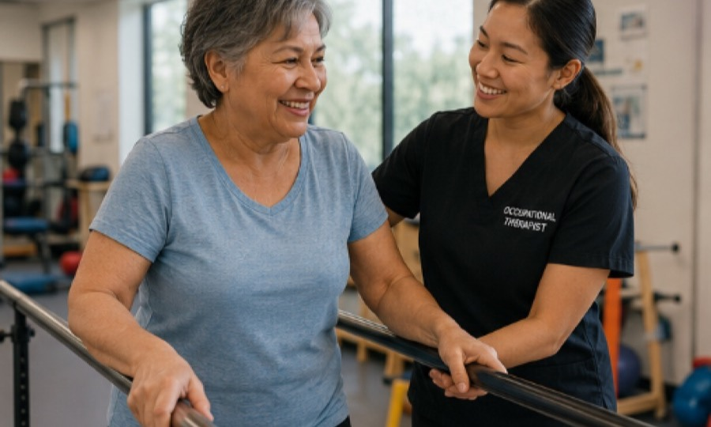

Assistive TechnologyAssistive technology for increased independence
Equipment that helps you do the things your disability makes hard. What is available, what it costs, who arranges it, and what changes when the nearest supplier is hours away.
Read more